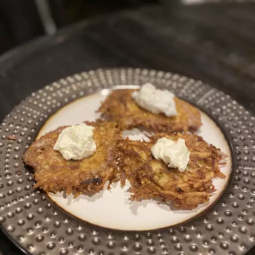

Latkes (potato pancakes) are a must-have at Hanukkah, but are really wonderful any time of the year! This is my mother's recipe, which is honestly the best potato latke I've had. I usually end up making a second batch because they disappear so quickly. I've tried other recipes and always return to this one. Lovely topped with sour cream or applesauce.
